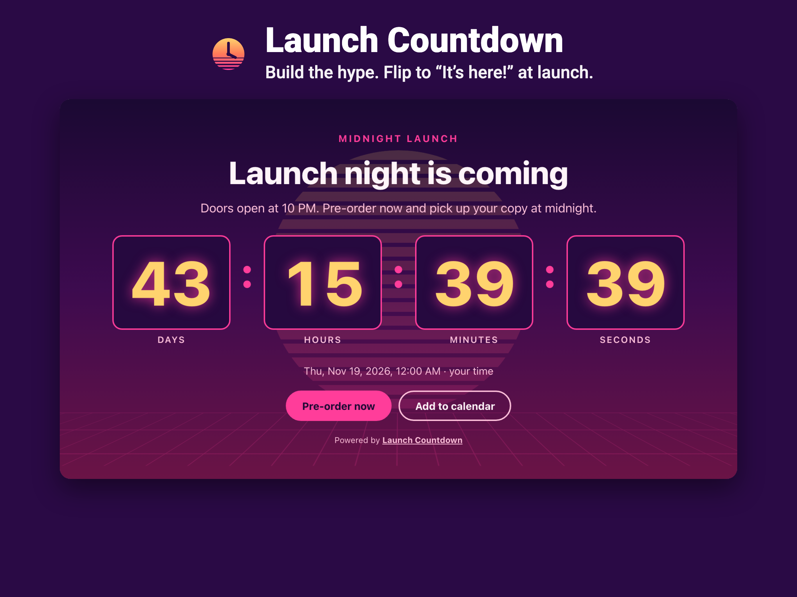
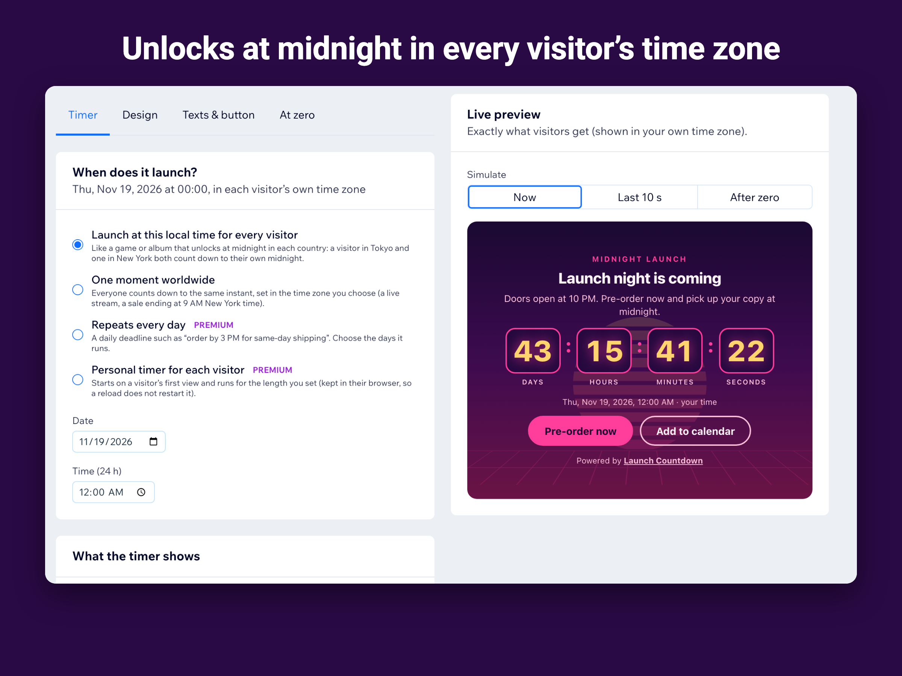

Launch Countdown for Wix
A big, themed countdown for a game drop, product launch, sale or event, which turns into your launch message and buy button the second it hits zero.

What it does
- Counts down to one moment worldwide, or to the same local time for every visitor (the way games and albums unlock at midnight in each country).
- At zero: shows “It’s here!” with your buy button, keeps counting up, hides itself, or sends visitors to another page.
- Add to calendar for Google, Apple and Outlook, so visitors come back on launch day.
- Eight original themes, from neon sunset and arcade to minimal and elegant, plus your own colors and background image.
- Daily deadlines (“order by 3 PM”) and personal timers for each visitor, a sticky top or bottom bar, confetti at zero.
- Eight interface languages, right-to-left support, and a live preview that simulates the last ten seconds and the launch itself.

Guides
Questions
Do I need a paid plan?
No. The Free plan includes one live countdown with four themes, fixed-date and local-midnight launches, add to calendar, eight languages and a message, count-up or hide at zero. Premium adds more countdowns, daily and personal timers, all themes, your colors, a sticky bar, confetti and redirects, and removes the credit line.
What happens with daylight saving time?
Launch times are stored as a date and time in a named time zone, and each visitor’s browser converts them with the current time-zone rules, so daylight-saving changes are handled automatically.
What if a visitor’s clock is wrong?
The app sends its server time with the countdown; if the visitor’s device clock is off by more than a minute, the countdown corrects it.
See it in the Wix App Market